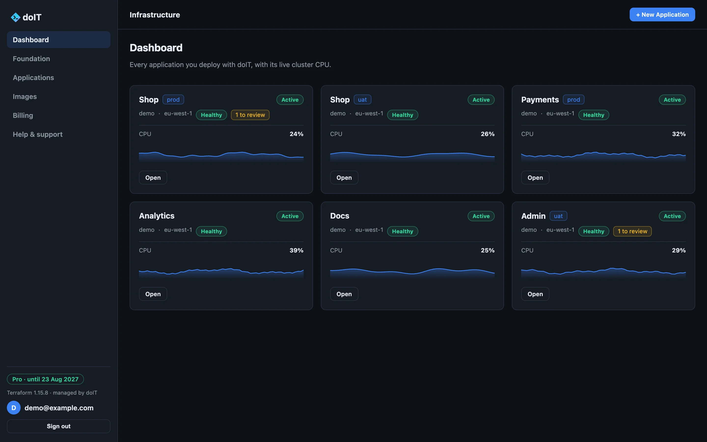
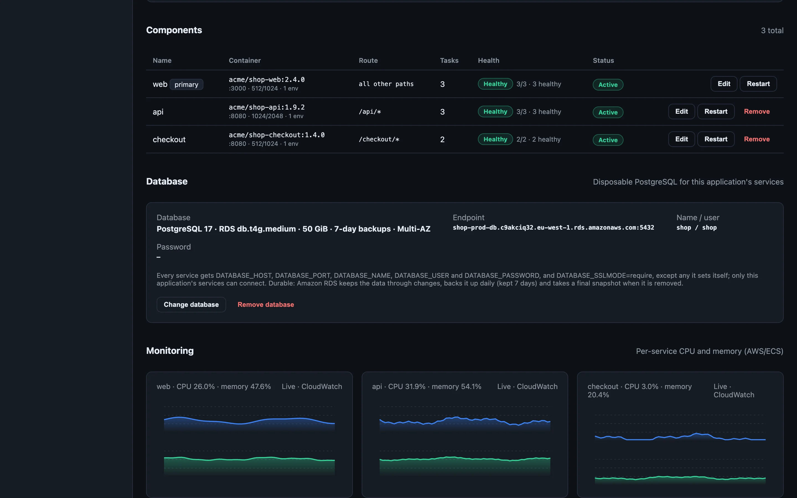
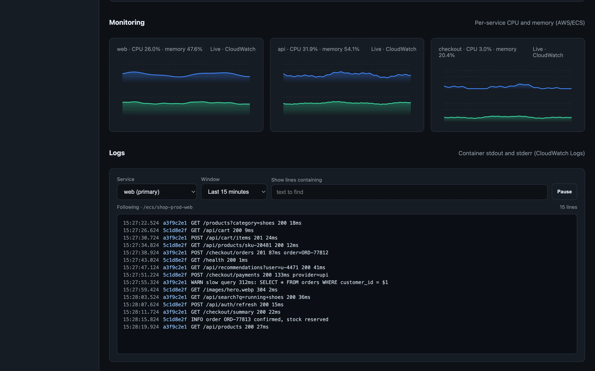
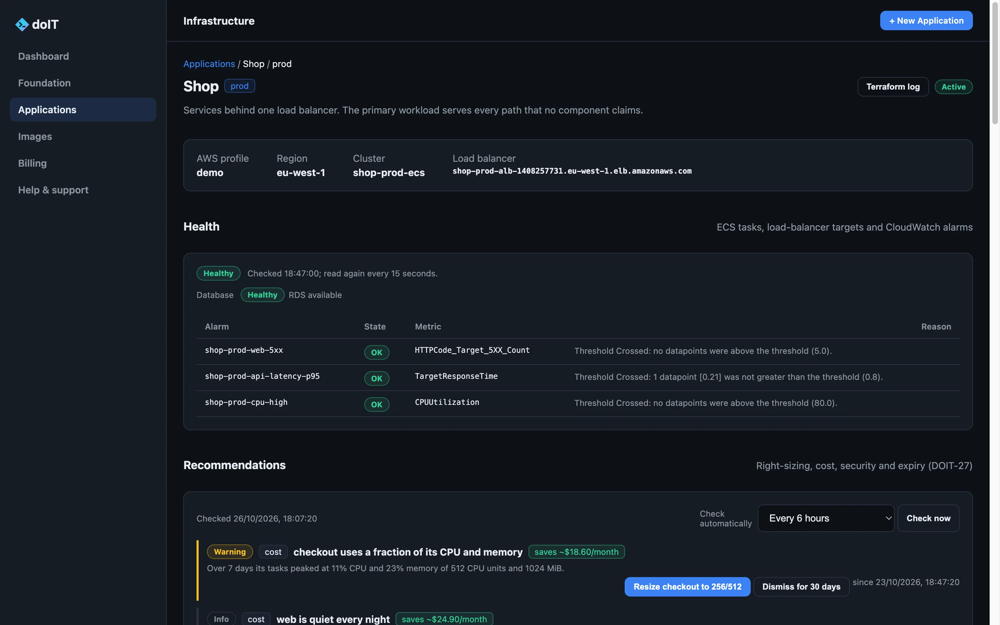
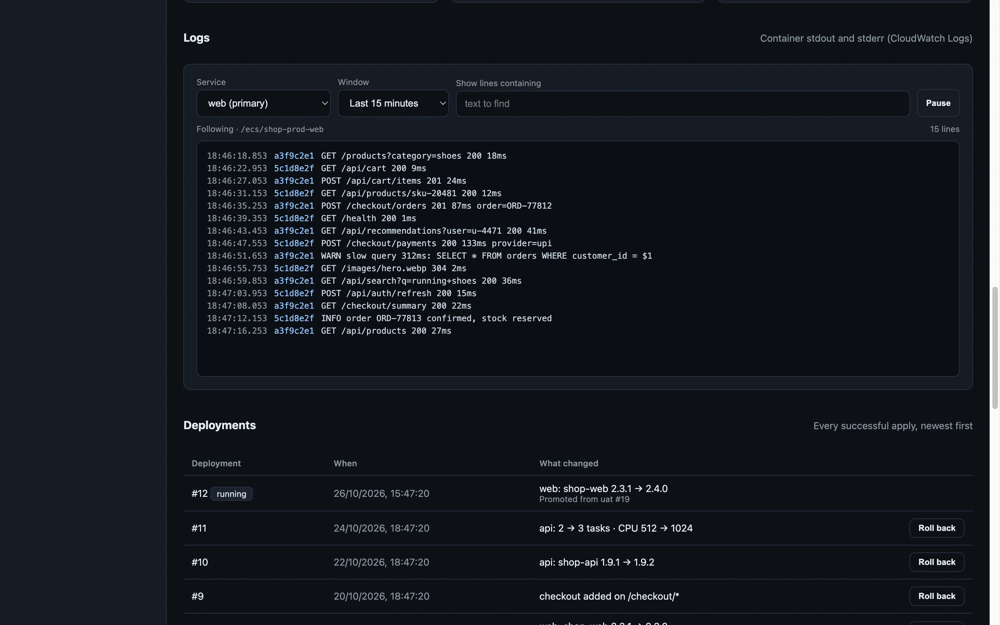
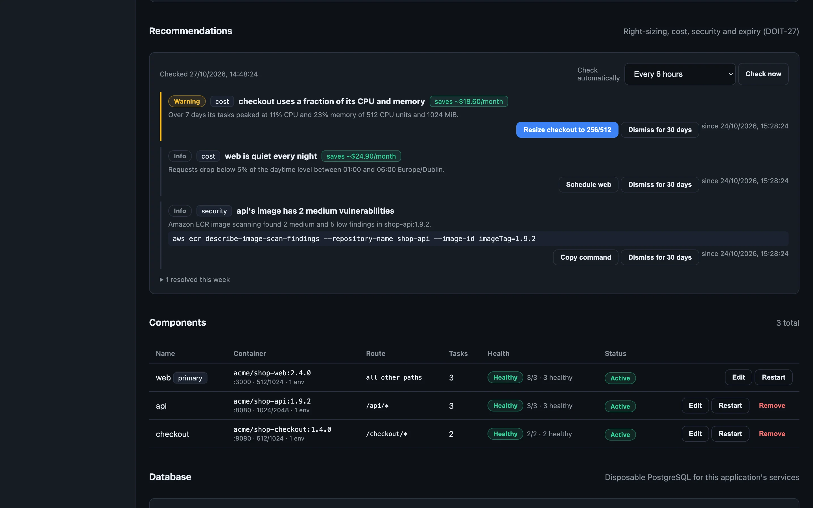
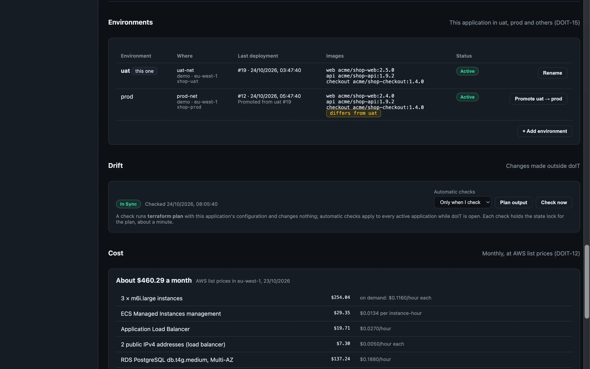
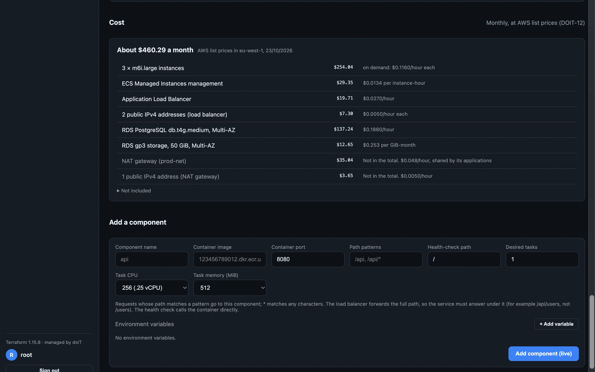
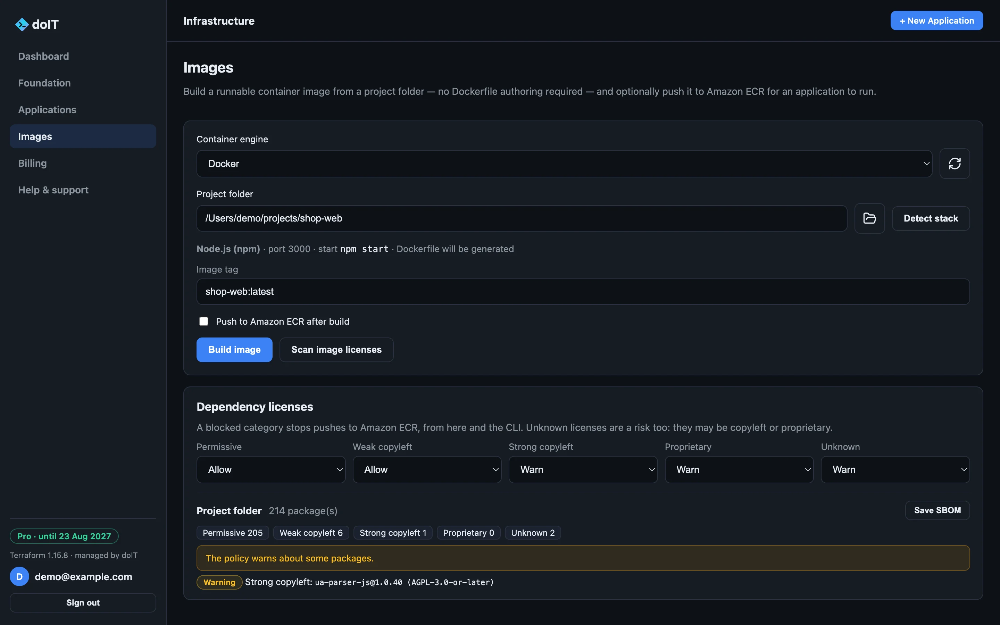

Dashboard
Every application, at a glance.
Each application you deploy, with its live cluster CPU, its health, and anything worth a look, across every account and region you use.
For macOS, Windows and Linux
Set up networking, deploy containers to Amazon ECS and keep them healthy, with Terraform it runs for you. Everything is created in your own AWS account, and stays yours.
Checking the latest release…

14
installers: Intel and ARM, for macOS, Windows and Linux, and 32-bit Windows
0
doIT servers between you and AWS. Your keys stay on your computer.
100%
of what it builds lives in your own AWS account
The tour
Dashboard
Each application you deploy, with its live cluster CPU, its health, and anything worth a look, across every account and region you use.
Services
Add components that serve their own paths, like /api or /checkout, each its own ECS service. Change an image,
size or task count in place, restart a service, and give the application PostgreSQL: disposable for tests, or Amazon RDS with backups and
Multi-AZ.

Monitoring
Charts read from CloudWatch for every service, with a crosshair to read any minute.

Health
Running and desired tasks, rollouts, load-balancer targets with the reason any fail, and the CloudWatch alarms that watch it, firing ones first.

Logs
Pick a service and a window from five minutes to a day, filter by text, pause and follow. Every line shows its time and its task.

Recommendations
Right-sizing from real usage with the saving priced, schedules for quiet hours, ports open to the internet, broad IAM policies, plain-text secrets and image findings. Resize or schedule in one click.

Environments
Run an application as uat and prod, each in its own network, account or region. See what differs, then promote: prod keeps its own size, schedules and settings.

Cost
Every application's monthly cost at AWS list prices, line by line, while you size it and once it runs.

Images
doIT recognises Node.js, Python, .NET, Go, Java and static sites, writes the Dockerfile, builds with Docker or Podman, pushes to Amazon ECR, and checks every dependency's license against your policy.

doIT runs Terraform for you, in your account, with your keys, and keeps the state in your own S3 bucket. Stop using it tomorrow, and everything it built keeps running.
How it works
Your computer
Your AWS account
VPC · public and private subnets · NAT
doIT signs every AWS request with your own profile. Keys are checked with STS and never leave your machine.
It downloads a pinned, checksum-verified Terraform release and runs it, one run at a time, with the output on screen.
Networks, load balancers, ECS services and databases are created in your AWS account, on your bill, under your control.
Terraform state lives in an S3 bucket in your account, with locking, so the desktop app and the CLI never collide.
Features
From the first network to the hundredth deployment, the work you would script, done in one place.
Config as code
Describe an application in YAML and apply it. Diff it in CI, export a running one, promote between environments. Everything in the app is in the doit CLI too.
$ doit diff -f shop.yaml --environment prod ~ web image acme/shop-web:2.3.1 → 2.4.0 ~ api desired tasks 2 → 3 $ doit apply -f shop.yaml --environment prod Applying 2 changes to Shop (prod)… ✓ Deployment #12 is running $ doit application health --id shop-prod ✓ healthy · web 3/3 · api 3/3 · checkout 2/2
A VPC with public and private subnets, NAT and endpoints, or adopt one you already have. doIT picks a free range if you don't.
Point at a project folder; doIT detects the stack, builds the image and pushes it to Amazon ECR.
Every npm, PyPI, Go, Alpine, Debian and RPM package checked. Warn on or block what you forbid, and save the SBOM.
Every apply is a numbered deployment. Edit in place, restart, retry a failed change or return to any earlier one.
A read-only plan shows what changed outside doIT, a console hotfix or a deleted resource. Reconcile it in one click.
Versions 16 to 18: a disposable task for tests, or Amazon RDS with backups, Multi-AZ, snapshots and in-place upgrades.
Four tasks on weekdays, one at night, in your time zone. AWS applies the schedule even while doIT is closed.
A run that stopped half-way can leave a state lock. doIT shows who holds it and releases it once nothing uses it.
Yours to keep
In every plan, and after a plan lapses: destroy and teardown, forget, export, and read-only access to everything you built. doIT never disables, degrades or deletes what runs in your account.
Download
doIT is not code-signed yet, so each operating system asks you to confirm the first time you open it.
.dmg and drag doIT to Applications.xattr -dr com.apple.quarantine /Applications/doIT.app
.exe installer for your PC, 64-bit (x64), ARM64 or 32-bit, and choose where to install doIT.chmod +x doIT-*.AppImage && ./doIT-*.AppImage
AppImages need FUSE 2; on Ubuntu install libfuse2 (libfuse2t64 on 24.04).
sudo apt install ./doIT-*.deb
Compare the file's SHA-256 with the one listed above:
shasum -a 256 <file>sha256sum <file>Get-FileHash <file> -Algorithm SHA256